Chapter 2 Cluster analysis
In this section, we will introduce how we can analyse spatial data including identifying clustering of data. The lecture slides for this practical can be found here. A PDF version of the practical can be found here. We define clustering here as where data (locations, or high/low values) are geographically concentrated in particular areas and not evenly spread out.
2.1 Point data
There are numerous point-based methods including clustering algorithms, spatial scan metrics, and count regression models that we could talk about here - too much to cover in this section. Instead, we will focus on descriptive techniques for displaying point-based data.
2.1.1 Spatial histograms
One of the first steps we might take in trying to see if our point data are spatially clustered is by plotting their locations. This may be important if we are looking at the locations of disease cases or outbreaks, allowing us to make inferences about clustering of diseases and the reasons behind this. In the example here, we will look at food outlets in Liverpool to assess if they are geographically concentrated in particular areas of Liverpool.
We will first load in the data on locations of food outlets. The data are taken from the Food Standards Agency website here and are open data. While there are too many columns to describe here, it is worth familiarising yourself with all these columns using head(food_outlets) first. The key variables we will be using are:
- Geocode.Longitude - longitude for location of premises
- Geocode.Latitude - latitude for location of premises
We also will load in the boundary shapefile for Liverpool here, to help provide a background for our points.
library(sf) # Load package## Registered S3 methods overwritten by 'tibble':
## method from
## format.tbl pillar
## print.tbl pillar## Linking to GEOS 3.7.2, GDAL 2.4.2, PROJ 5.2.0# Load food outlets data
food_outlets <- read.csv("./Data/liverpool_food_outlets.csv") # Load data
food_outlets <- food_outlets[!is.na(food_outlets$Geocode.Latitude),] # Drop missing co-ordinates (e.g., burger vans that have no fixed position) since cannot plot them
# Convert to spatial points data frame
food_outlets_sp <- food_outlets %>% # For object
st_as_sf(coords = c("Geocode.Longitude", "Geocode.Latitude")) %>% # Define as spatial object and identify which columns tell us the position of points
st_set_crs(4326) # Set CRS
# Load Liverpool outline
liverpool <- read_sf("./Shapefiles/Liverpool_LAD/england_lad_2011.shp") # Load in shapefile
liverpool <- st_transform(liverpool, 4326) # Reproject to same as long/lat formatOk, with the data loaded in, we can now map the points.
library(ggplot2) # Load package
map1 <- ggplot() + # Call ggplot command
geom_sf(data = liverpool) + # Load liverpool outline
geom_sf(data = food_outlets_sp) + # Plot food outlet as dots
xlab("Longitude") + # Add x-axis label
ylab("Latitude") + # Add y-axis label
labs(title = "Food outlets in Liverpool") # Edit plot title
map1 # Print plot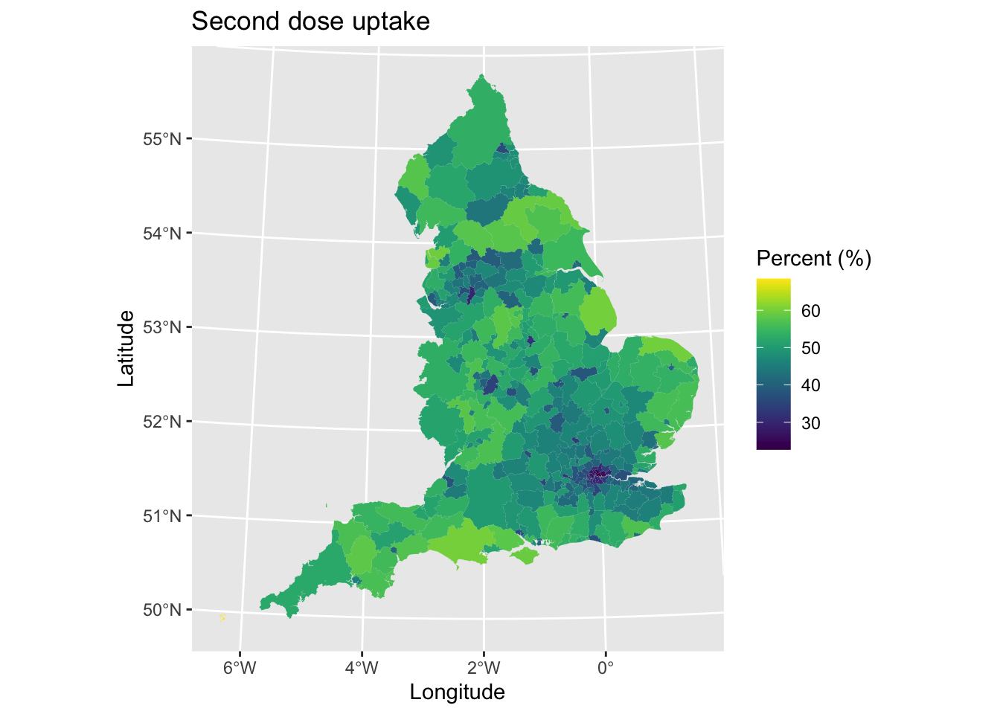
Hmmmm, you may see there is an issue with interpretating this plot - many of the plots overlap each other making it difficult to determine underlying patterns. We therefore need a way of summarising this information.
Histograms are useful plots for examining the distribution of single variables - we can apply them spatially by creating spatial histograms. To do this, we need to create spatial bins and then count how many points are in each of those bins. We use this binning approach when producing histograms for single variables (e.g., counting how many points exist at each value of a variable) and just extend it here for each x,y position on a map. I recommend using a hex approach, since hexagons can minimise visual artefacts that can be created through other shapes.
library(viridis) # Load package## Loading required package: viridisLitemap2 <- ggplot() + # Call ggplot2
geom_sf(data = liverpool) + # Load liverpool outline
geom_hex(data = food_outlets, aes(x = Geocode.Longitude, y = Geocode.Latitude)) + # Define data to be plotted
scale_fill_viridis() + # Make colour blind friendly
xlab("Longitude") + # Add x-axis label
ylab("Latitude") + # Add y-axis label
labs(title = "Food outlets in Liverpool") # Edit plot title
map2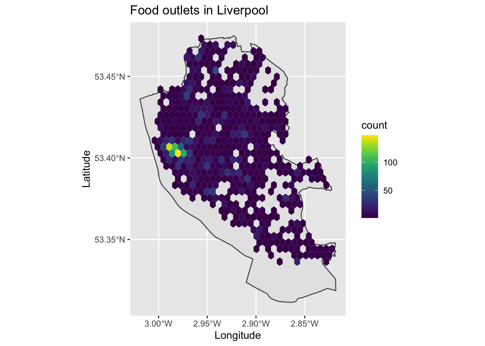
We can now see the clustering of points in the city centre, with food outlets covering most of the city.
2.1.2 Kernal Density Estimation
An alternative approach might be to use Kernal Density Estimation (KDE) which can create a continuous surface for the density/clustering of points. This avoids the limitation of spatial histograms through creating a single map with no boundaries, rather than splitting up areas into arbitrary bins. KDE or density plots are often used as alternative to standard histograms.
Here we are measuring the intensity or density of points for a given location. We can run these analyses in ggplot2 using the stat_density2d_filled command.
map3 <- ggplot() + # Call ggplot2
geom_sf(data = liverpool) + # Load liverpool outline
stat_density2d_filled( # Call KDE or smoothed density plot
data = food_outlets, aes(x = Geocode.Longitude, y = Geocode.Latitude, # Define data and locations
fill = ..level..,alpha=..level..), # Set paramters for colouring in values
n = 100 # Modify and see how changes the map (is number of neighbours to derive clustering from)
) +
scale_color_viridis() + # Make colour blind friendly
xlab("Longitude") + # Add x-axis label
ylab("Latitude") + # Add y-axis label
labs(title = "Food outlets in Liverpool") # Edit plot title
map3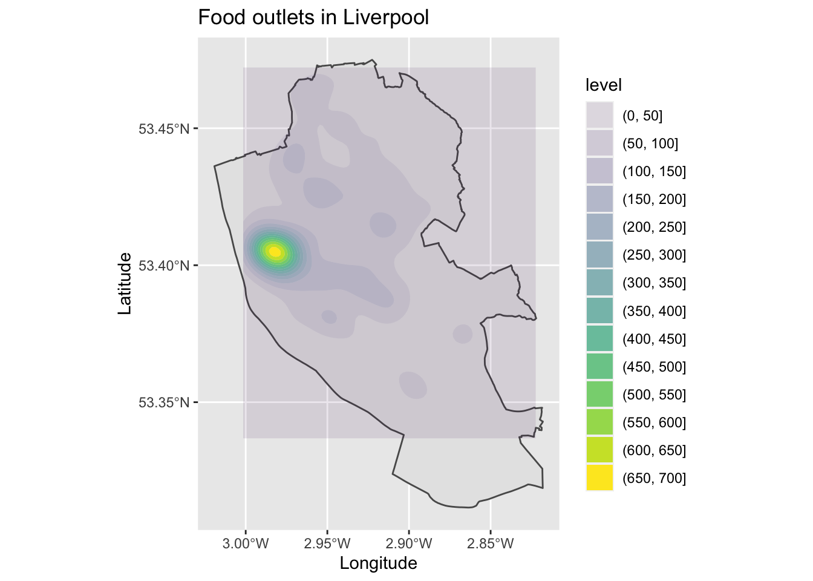
The resulting map is similar to the hexmap earlier, but we now have one contiguous and single surface for the data. It is worth playing about with the number of neighbours to examine how the algorithm changes the resulting map. Sometimes these are called ‘heatmaps.’
2.1.3 Spatial interpolation
Sometimes the point data that we have contain values or variables that tell us information about them. Here we might be interested in values themselves, rather than the clustering of their locations. We therefore need a different approach here.
To demonstrate how to visualise and extract some value here, we will use a new dataset. The data can be found here and are open data. I have done some additional cleaning on the data and extracted their spatial locations to save us time. There is active debate over how useful these data are, but they provide a helpful case study. The variables in the dataset are:
- pcn_code - unique code for the primary care network (groups of GP practices/surgeries)
- pcn_name - name for primary care network
- gp_code - unique code for GP surgery
- gp_name - name of GP surgery
- chronic_heart_disease_percent - estimated percentage of people at the surgery who have chronic heart disease
- obese_percent - estimated percentage of people who are defined as obese
- postcode - postcode for GP surgery
- longitude - longitude location
- latitude - latitude location
Let’s load in these data.
# Load data
gp_locations <- read.csv("./Data/gp_qof_1920.csv")
# Convert to spatial points data frame
gp_locations_sp <- gp_locations %>% # For object
st_as_sf(coords = c("longitude", "latitude")) %>% # Define as spatial object and identify which columns tell us the position of points
st_set_crs(4326) # Set CRSThere are numerous ways that we might plot or visualise these data. First, we could simply assign colours to each point based on their values. We will explore this using the data on percentage of registered patients who are obese.
map4 <- ggplot() + # Call ggplot2
geom_sf(data = liverpool) + # Plot Liverpool outline
geom_sf(data = gp_locations_sp, aes(color = obese_percent), size = 2) + # Define what to map (adjusted size to make easier to see)
scale_color_viridis() + # Make colour blind friendly
xlab("Longitude") + # Add x-axis label
ylab("Latitude") + # Add y-axis label
labs(title = "Percentage of patients who are obese", # Edit plot title
color = "Obesity (%)") # Edit legend title (note must match color as that is what we are plotting)
map4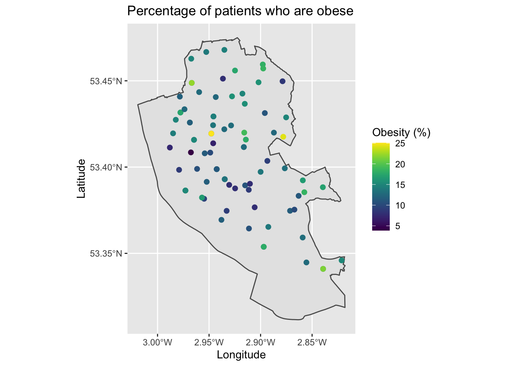
This is a little hard to see general patterns, but follows what we learnt last week.
A second approach would be to adjust the size of the dots in relation to their value.
map5 <- ggplot() + # Call ggplot2
geom_sf(data = liverpool) + # Plot Liverpool outline
geom_sf(data = gp_locations_sp, aes(size = obese_percent),) + # Define what to map
scale_color_viridis() + # Make colour blind friendly
xlab("Longitude") + # Add x-axis label
ylab("Latitude") + # Add y-axis label
labs(title = "Percentage of patients who are obese", # Edit plot title
size = "Obesity (%)") # Edit legend title (note must match size as that is what we are plotting)
map5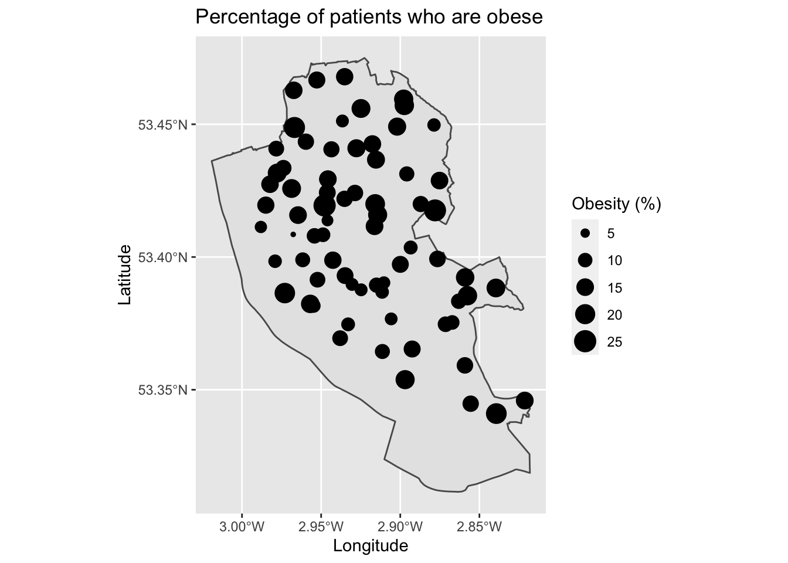
Adjusting the size of points can be visually more striking, but is also harder to interpret the exact values. It is easier for the human mind to judge differences in colour rather than differences in sizes of points. Try identifying locations that are grouped as 15 or 20 on the map - it’s hard!
Since our maps only present data for the spatial points themselves, we may want to estimate what the data might be like inbetween points to help identify the area extent of clusters or general spatial patterns. Here, we would turn to spatial interpolation techniques that can create a continuous surface based on given point values.
There are various spatial interpolation techniques that we can then use to fill in the gaps including inverse distance weighting or spatial kriging techniques. In this tutorial, we will just use non-linear splines to estimate values inbetween points. Splines are faster to run, but may give less precise results.
The following code below runs the interpolation code and then sorts the data out to a format for mapping. We need a couple of new packages here - akima and reshape2 - although, we will only use them briefly so I will not describe them in detail.
# Interpolate data
library(akima) # Load package
obese_interp <- with(gp_locations, interp(x = longitude, y = latitude, z = obese_percent, duplicate = "mean", linear = FALSE)) # Set parameters for spatial location, what to predict, how to deal with duplicate values (i.e., take the mean), and linear = FALSE means uses cubic splines
# Data wrangling
library(reshape2) # Load package
pred_obese_df <- melt(obese_interp$z, na.rm = TRUE) # Convert predicted values from a list (in wide format) to data frame (in long format)
names(pred_obese_df) <- c("x", "y", "obese_percent") # Rename columns
# Sort out longitude values
x <- melt(obese_interp$x, na.rm = TRUE) # Convert longitude values from list format to data frame
x <- data.frame(row.names(x), x, row.names = NULL) # Save row values as column (these match up to melt values x)
names(x) <- c("x", "longitude") # Rename columns
pred_obese_df <- merge(pred_obese_df, x, by = "x", all.x = T) # Join on longitude values to their lookup values from the melt process
rm(x) # Tidy
# Sort out latitude values
y <- melt(obese_interp$y, na.rm = TRUE) # Convert longitude values from list format to data frame
y <- data.frame(row.names(y), y, row.names = NULL) # Save row values as column (these match up to melt values y)
names(y) <- c("y", "latitude") # Rename columns
pred_obese_df <- merge(pred_obese_df, y, by = "y", all.x = T) # Join on longitude values to their lookup values from the melt process
rm(y) # TidyPhew, that code was rather messy but it does get the job done (if you know a better way, let me know!). We can now plot it using a heat map.
map6 <- ggplot() + # Call ggplot2
geom_sf(data = liverpool) + # Plot Liverpool outline
geom_tile(data = pred_obese_df, aes(x = longitude, y = latitude, fill = obese_percent)) + # Define what to map (interpolated values)
scale_fill_viridis() + # Make colour blind friendly
xlab("Longitude") + # Add x-axis label
ylab("Latitude") + # Add y-axis label
labs(title = "Estimated obesity prevalence", # Edit plot title
fill = "Obesity (%)") # Edit legend title (note must match fill as that is what we are plotting)
map6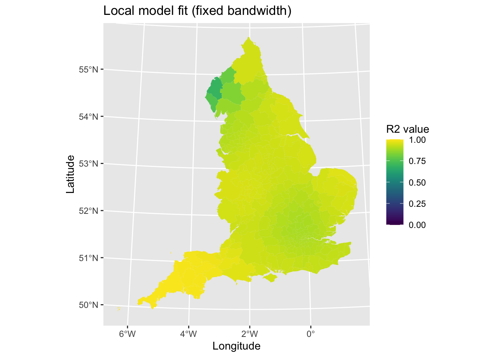
We should be careful in producing these maps, since we are estimating data inbetween points and the resulting maps may not be correct. For example, it makes an assumption that people go to their nearest GP surgery to where they live, which is not always true. We can see a cluster of high levels of obesity north of the city centre, which is a densely populated deprived area. However, there is a lot of variability in the data and it is a little messy. Hopefully at least it gives you can idea of how to use these techniques and what they can produce.
Can you produce a similar map for chronic health disease prevalence? (tip: the variable required is gp_locations$chronic_heart_disease_percent).
2.2 Area data
These techniques introduced for point-based data do not work with area data. However, we can utilise more powerful techniques to examine the existence of clustering in our data.
We will utilise a new R package - spdep (Spatial Dependence). The package includes a range of functions that are useful for creating spatial weighting schemes which are useful for identifying the spatial structure of datasets, as well as some spatial analysis methods including the spatial autocorrelation measures we will use here.
To highlight some of these techniques, we will return to the data on vaccination uptake from the previous tutorial. Let’s load in the data and remind ourselves of the spatial patterns it contained.
# Get data ready
msoas <- read_sf("./Shapefiles/Liverpool_MSOAs/england_msoa_2011.shp") # Load in shapefile for Liverpool MSOAs
vaccine_uptake <- read.csv("./Data/msoa_vaccine_10June21.csv") # Load in vaccine uptake data
msoas <- merge(msoas, vaccine_uptake, by.x = "code", by.y = "msoa_code", all.x = TRUE) # Merge the vaccine uptake objects onto the msoa object, based on the columns defined (x = msoas, y = vaccine_uptake), and do this for all observations only in the x (msoas) object
# Map
map7 <- ggplot() + # Call ggplot command
geom_sf(data = msoas, aes(fill = total_first_dose), lwd = 0) + # Using a spatial object, plot MSOAs and fill in based on number of people with first COVID-19 dose, with line width = 0 (i.e., not visible)
scale_fill_viridis_c(option = "plasma") + # Make colour-blind friendly
xlab("Longitude") + # Add x-axis label
ylab("Latitude") + # Add y-axis label
labs(title = "First dose COVID-19 vaccinations", # Add title to map
fill = "Frequency") # Edit legend title
map7 # Print plot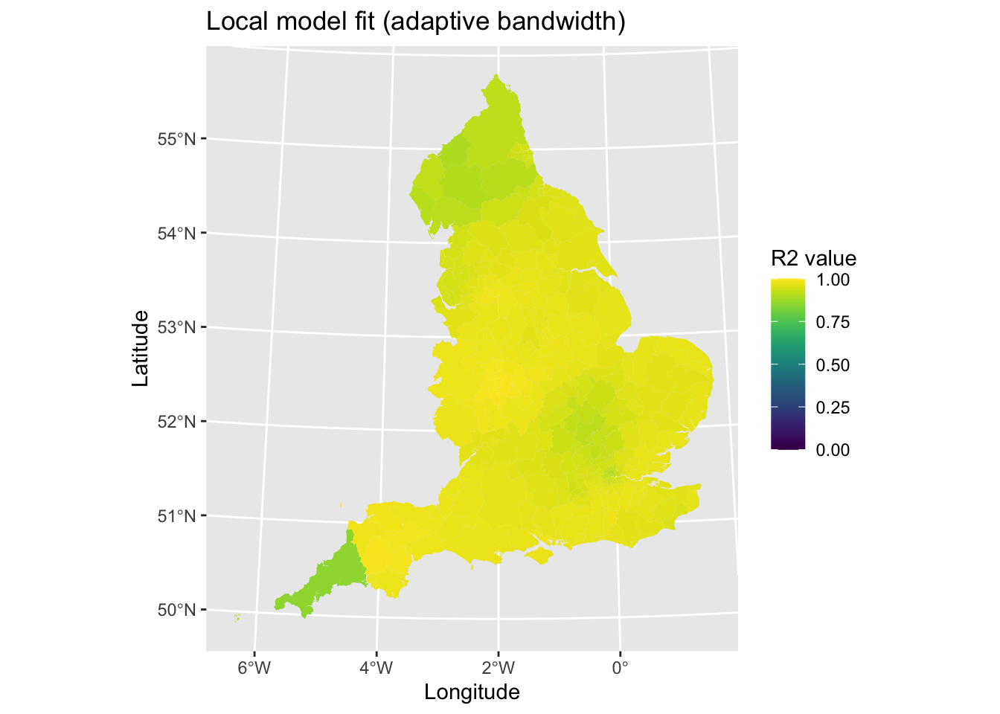
2.2.1 Global Moran’s I
The first step we would want to take is to describe the overall extent of spatial clustering of any variable. To do this, we will calculate a global Moran’s I statistic that can tell us the extent of clustering of data. You can review the methodology behind this in the related lecture slides here.
To be able to describe the clustering, we need to tell R about the spatial structure of our dataset. Specifically, we need to identify which areas are located next to each other (i.e., neighbours).
As we are dealing with area (polygons) spatial data, we will define spatial neighbours based on which borders they match on. So if two areas share a common border, then we can define them as neighbouring each other. There are two ways of defining this process:
- Rook contiguity - only areas that share common borders/edges of some defined length
- Queen contiguity - all areas that touch each other are considered neighbours, even if the shared space is very small
To calculate the spatial structuring of neighbouring areas, we run the following code.
library(spdep) # Load package## Loading required package: sp## Loading required package: spData## To access larger datasets in this package, install the spDataLarge
## package with: `install.packages('spDataLarge',
## repos='https://nowosad.github.io/drat/', type='source')`nb <- poly2nb(msoas, queen = TRUE) # Calculate queen contiguity for areas (set queen = FALSE for rook contiguity)We now need to assign spatial weights to each area (polygon) based on the spatial structure of the data. These weights are important when we are calculating the average values of neighbours, but adjusting their values.
lw <- nb2listw(nb, style = "W", zero.policy = TRUE) # Assign weights based on list of neighbours. Each neighbouring area is given an equal weighting (syle = "W"). Zero.policy = TRUE allows for areas with no neighbours.Now that we have weightings for each areas linked to its neighbours, we can calculate the global Moran’s I. Essentially, it is looking at the correlation between each area’s value and the average values for surrounding neighbours. This gives a crude descriptive value of the amount of clustering in our data - it is termed ‘global’ since it is an average for all areas.
m1 <- moran.test(msoas$total_first_dose, lw) # Calculate Moran's I
m1 # Print result##
## Moran I test under randomisation
##
## data: msoas$total_first_dose
## weights: lw
##
## Moran I statistic standard deviate = 1.5264, p-value = 0.06345
## alternative hypothesis: greater
## sample estimates:
## Moran I statistic Expectation Variance
## 0.107062246 -0.016666667 0.006570535There is a lot of output here, however we are really only interested in two things mostly. The Moran’s I statistic is 0.1070622. We interpret the estimated value was running between -1 and 1, where values closer to 1 suggest existence of spatial clustering, values of 0 suggesting no clustering (i.e., random), and values less than 0 suggesting evenly dispersed values (rare in the real world). Some rules of thumbs - a value of 0.3 would suggest low-moderate clustering, with values 0.5+ suggestung moderate to high clustering. A value of 0.1070622 suggests little evidence of clustering in the data.
We can also consider the p-value to assess if the result is statistically significant notwithstanding the continued controversy on using p-values. A value of 0.0634541 suggests that the result is not statistically significant, lending further evidence towards a conclusion that there is little evidence of spatial clustering.
To get a more accurate p-value, we should use Monte Carlo simulations to estimate it. Let’s try this, but this time looking at the clustering of second dose COVID-19 vaccinations.
m2 <- moran.mc(msoas$total_second_dose, lw, nsim = 1000) # Calculate Moran's I and simulate 1000 times permutations to give more accurate p-value
m2 # Print result##
## Monte-Carlo simulation of Moran I
##
## data: msoas$total_second_dose
## weights: lw
## number of simulations + 1: 1001
##
## statistic = 0.30176, observed rank = 1001, p-value = 0.000999
## alternative hypothesis: greaterHere we find some evidence of clustering in the data, with a value of suggesting low to moderate clustering in the data.
m2_plot <- moran.plot(msoas$total_second_dose, listw = lw, plot = FALSE) # Save raw moran's I data (if run without saving as an object, it will plot in base R if you set plot = TRUE (default)- for our purposes, I have shown how to get it into ggplot2 as it looks nicer
# Plot
plot1 <- ggplot(data = m2_plot, aes(x = x, y = wx)) + # Plot x (actual values) and wx (average for neighbours)
geom_point() + # Scatter plot
geom_smooth(method = "lm") + # Line of best fit
xlab("Number of second doses") + # Label x-axis
ylab("Spatially lagged number of second doses")
plot1 # Print plot## `geom_smooth()` using formula 'y ~ x'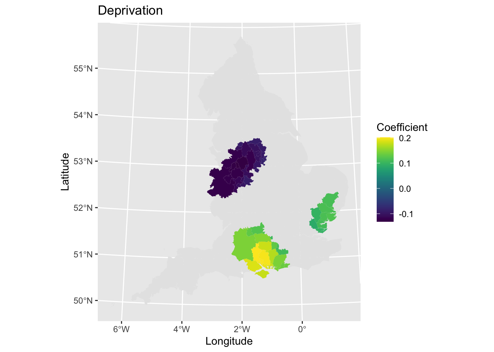
2.2.2 Local Moran’s I
If we find evidence of clustering overall, then the next step is to describe where this clustering exists. The global Moran’s I for number of second COVID-19 vaccine doses suggested some clustering of values, let’s explore where the clustering exists and the nature of it. Using a local Moran’s I, we can calculate the extent each area belongs to a cluster of high or low values.
# Estimate metrics
local_2nd <- localmoran(x = msoas$total_second_dose, listw = lw) # Calculate local Moran's I
# local_2nd <- localmoran_perm((x = msoas$total_second_dose, listw = lw, nsim=499) # In case want to run more simulations to get a more accurate level of significance
local_2nd_map <- cbind(msoas, local_2nd) # Join estimates onto shapefile for MSOAs
# Map
map8 <- ggplot() +
geom_sf(data = local_2nd_map, aes(fill = Ii)) + # Plot local Moran's I statistic (z score)
scale_fill_viridis() + # Make colour blind friendly
xlab("Longitude") + # Add x-axis label
ylab("Latitude") + # Add y-axis label
labs(title = "Clustering of second dose uptake", # Edit plot title
fill = "Local Moran's I") # Edit legend title (note must match fill as that is what we are plotting)
map8 # Plot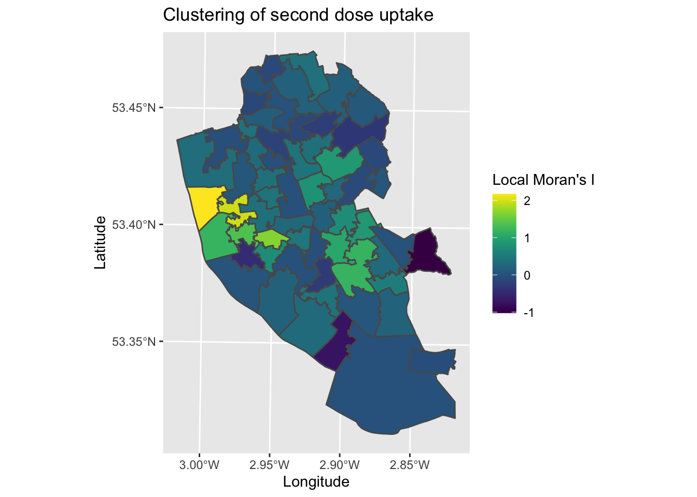
The map tells us how different each area is to it’s surrounding areas , with areas with higher z-scores representing areas that are clustered by higher values in the surrounding areas, and lower scores the opposite (surrounded by lower values). The map suggests a cluster in the city centre area, as well as a less distinct one to the South East. To understand how meaningful these spatial patterns are, we can plot the p-values for areas.
map9 <- ggplot() +
geom_sf(data = local_2nd_map, aes(fill = Pr.z...0.)) + # Plot local Moran's I statistic (z score)
scale_fill_viridis() + # Make colour blind friendly
xlab("Longitude") + # Add x-axis label
ylab("Latitude") + # Add y-axis label
labs(title = "Clustering of second dose uptake", # Edit plot title
fill = "p-value") # Edit legend title (note must match fill as that is what we are plotting)
map9 # Plot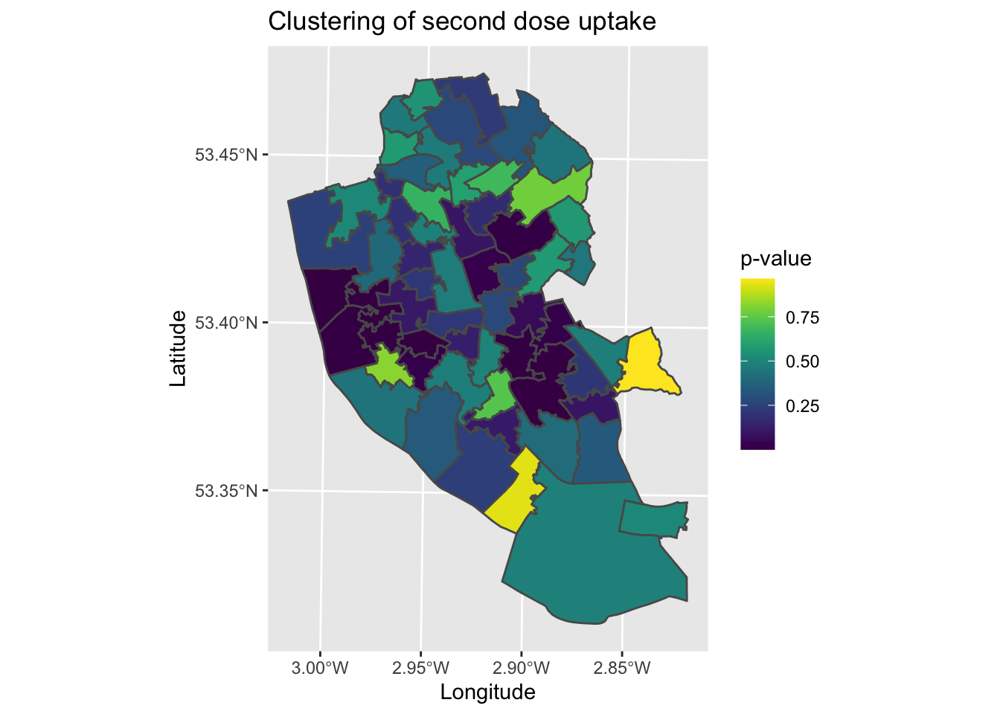
What the map is missing is the nature of the clusters. We can say with some confidence that there is a cluster in the city centre for example, but we are not sure what this is a cluster of. We could compare manually to map7, however it would be useful to have a single map the brings together all of this information. To help contextualise the clustering analysis, we need to classify the local Moran’s I data to describe their patterns.
# Data wrangling
quadrant <- vector(mode="numeric", length = nrow(local_2nd)) # Create blank object for storing results
m_2nd <- msoas$total_second_dose - mean(msoas$total_second_dose) # Centers each area around its mean (for variable under investigation)
m_localmi <- local_2nd[,1] - mean(local_2nd[,1]) # Centers areas on the local Moran's I values around the mean
sig <- 0.1 # Define statistical significance threshold (feel free to select more stringent values)
# Populate the blank object with our classification of results
quadrant[m_2nd < 0 & m_localmi < 0] <- 1 # Low-low: Lower than average raw value, lower than average surrounding areas
quadrant[m_2nd < 0 & m_localmi > 0] <- 2 # Low-high: Lower than average raw value, higher than average surrounding areas
quadrant[m_2nd > 0 & m_localmi < 0] <- 3 # High-low: Higher than average raw value, lower than average surrounding areas
quadrant[m_2nd > 0 & m_localmi > 0] <- 4 # High-high: Higher than average raw value, higher than average surrounding areas
quadrant[local_2nd[,5] > sig] <- 0 # Identify non-significant areas
quadrant <- factor(quadrant, levels = c("0", "1", "2", "3", "4")) # Define variable as factor (as distinct categories)
local_2nd_map2 <- cbind(msoas, quadrant) # Join data onto the original shapefile
# Plot
map10 <- ggplot() +
geom_sf(data = local_2nd_map2, aes(fill = quadrant)) + # Plot values
scale_fill_manual(values = c("0" = "white", "1" = "blue", "2" = rgb(0,0,1,alpha=0.4), "3" = rgb(1,0,0,alpha=0.4), "4" = "red"),
labels = c("Insignificant", "Low-low", "Low-high", "High-low", "High-high"),
breaks = c(0, 1, 2, 3, 4),
drop = FALSE) + # Show all values in legend
labs(title = "Clustering of second dose uptake", # Edit plot title
fill = "Clusters") + # Edit legend title (note must match fill as that is what we are plotting)
xlab("Longitude") + # Add labels
ylab("Latitude")
map10 # Print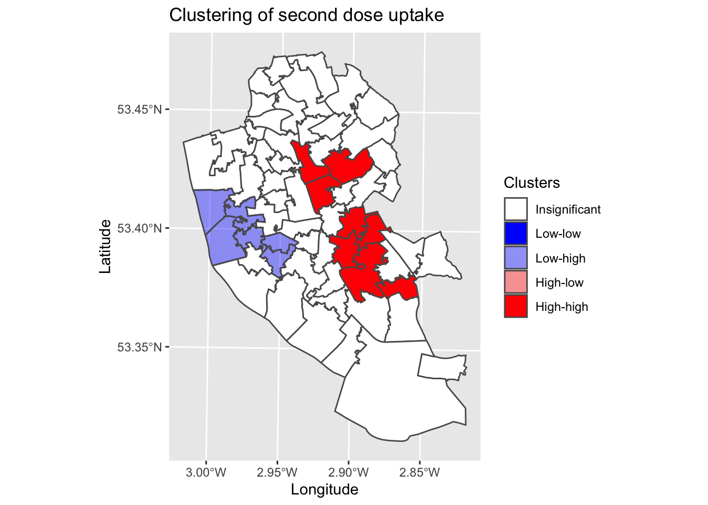
This map is a common output in local Moran’s I analyses. It combines the raw data, clustering analysis and associated statistical significance into a single plot. We can see that in the city centre, we have a cluster of low vaccination uptake surrounded by areas with higher values. We then have two significant clusters to the East, representing clusters of higher uptake.
2.2.3 Getis-Ord Gi statistic
An alternative clustering metric is the Getis-Ord Gi statistic. The Gi statistic is presented as a z-score, with positive values representing clusters of high values and negative values representing clusters of low values.
We can calculate the Gi statistic using the following code.
localGi <- localG(msoas$total_second_dose, listw = lw) # Calculate Gi statistics for each MSOA (second dose total)As before, the power of the clustering metrics is seen when we map it. Let’s visualise the spatial pattern of clustering.
# Wrangle data
Gi_map <- cbind(msoas, data.matrix(localGi)) # Join results onto shapefile
names(Gi_map)[names(Gi_map) == "data.matrix.localGi."] <- "gstat" # Rename column
# Map
map11 <- ggplot() +
geom_sf(data = Gi_map, aes(fill = gstat)) +
scale_fill_viridis() + # Make colour blind friendly
xlab("Longitude") + # Add x-axis label
ylab("Latitude") + # Add y-axis label
labs(title = "Second dose uptake", # Edit plot title
fill = "Gi statistic") # Edit legend title (note must match fill as that is what we are plotting)
map11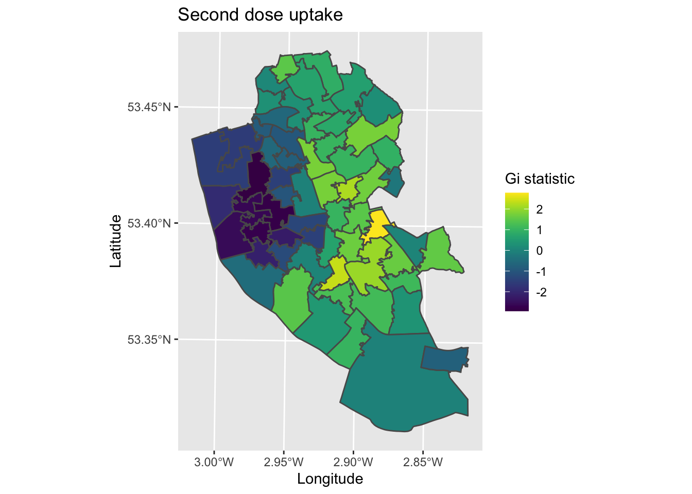
The map produced is both similar and different to the local Moran’s I. We see clustering in the city centre (younger populations) and north parts of Liverpool (more deprived communities), with higher vaccinate uptake in the more affluent South and South-East parts of the city.
2.3 Summary
So far, you have learned how to use spatial data in R, visualise and map their patterns, and start to analyse the spatial patterns themselves. Next we will move onto spatial extensions of regression techniques.